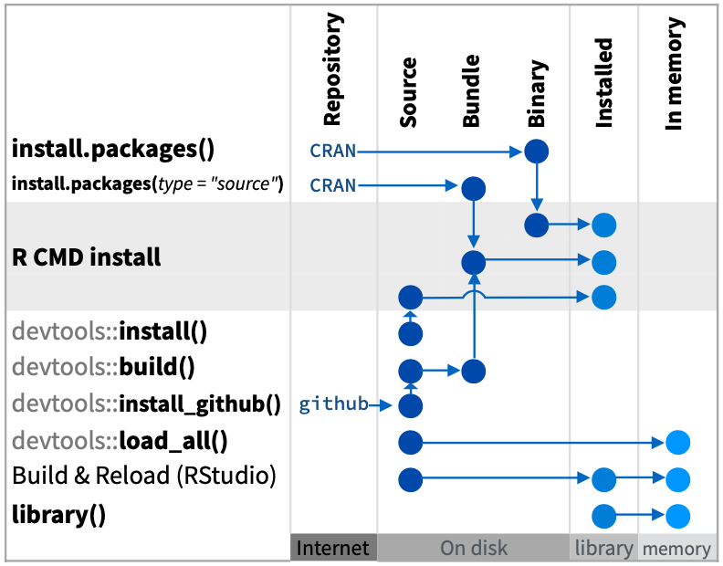

7 Applications
Learning Objectives
An R package is a documented set of functions that can act as building blocks for data ingestion, analysis, visualization and reporting. We’ll go over the basics of creating an R package and documenting functions within.
7.1 Install R packages
Ensure you have the R packages used to help build R packages.
librarian::shelf(
devtools, pkgdown, roxygen2, usethis)7.2 Create your first R package web app
Similar to other examples, let’s create a simple R package from within your r3-exercises RStudio project starting from the provided default by going to File -> New Project… -> New Directory -> R Package… and name it mypkg.

By ticking Open in a new session before Create Project, another instance of RStudio will open in addition to your existing one (i.e. the r3-exercises project).
Notice the file structure in your RStudio Files pane:
DESCRIPTION
name, author, version, package dependenciesNAMESPACE
functions to import and exportR/
folder containing R files- hello.R
specific functions defined in R files
- hello.R
man/
folder containing manual files with documentation- hello.Rd
documentation in Latex style
(which gets auto-generated by inline R comments with roxygen2)
- hello.Rd
Open each file to get a sense of its contents and style of tet.
Load the Package
Before you can use the single hello() function in this package, you’ll need to load it first. There are a few options for how to load this, which is summarized in the Package Development with devtools Cheatsheet:

Although a daunting diagram at first blush, it’s very informative with the different pathways to going from source code to functions in the package being loaded into memory and available. Let’s start with the most direct path from Source to In memory within your mypkg RStudio instance, which is what you most commonly use as you develop an R package:
devtools::load_all()Looking at the help (?devtools::load_all), we see the first argument is the path which defaults to your current working directory ("."; see with getwd()). Now test it out:
# run function
hello()
# look at the help documentation for the function
?hello7.3 Document functions in R/
The original R format for documentation *.Rd is in Latex format that has a lot of extra syntax and is also easy to mismatch the function’s arguments and logic as it gets developed in a separate *.R file. Entrez roxygen2 to the rescue (that is run with devtools::document()), which allows you to easily document the function directly above its R definition with special commenting.
Open the R/hello.R file, place your cursor inside the hello() function and go to RStudio’s menu Code -> Insert Roxygen Skeleton. You should see the new special comments populate above the function:
#' Title
#'
#' @return
#' @export
#'
#' @examples
hello <- function() {
print("Hello, world!")
}To mimic the original documentation, replace the defaults to look like so:
#' Hello, World!
#'
#' Prints 'Hello, World!'
#'
#' @return a string
#' @export
#'
#' @examples
#' hello()
hello <- function() {
print("Hello, world!")
}Now to update the documentation using roxygen2, you’ll need to first delete these files which will hereafter be written only by roxygen2:
NAMESPACE
man/hello.Rd
# document functions in the package
devtools::document()
# ℹ Updating mypkg documentation
# First time using roxygen2. Upgrading automatically...
# ℹ Loading mypkg
# Writing NAMESPACE
# Writing hello.RdNow reload the package and look at the help:
# reload the function
devtools::load_all()
# look at the help documentation for the function
?hello7.3.1 Add argument
Next, let’s add an argument to make the function flexible to greet anyone:
#' Hello, World!
#'
#' Prints 'Hello, {name}!'
#'
#' @param name who to greet; defaults to "World"
#'
#' @return a string
#' @export
#'
#' @examples
#' hello()
#' hello("Ben")
hello <- function(name = "World") {
print(glue::glue("Hello, {name}!"))
}To get above, we:
Added
nameas an argument to the function with the default value of"World".Constructed the string with the
glue::glue()function to use the argument.Ran Code -> Insert Roxygen Skeleton again to detect the new argument in the function and add the special
roxygen2comment with@param name.
7.3.2 Add dependency
You’ll notice that we’re now using the package glue and its core function glue, but we haven’t declared that within the dependencies of the package. To do so you’ll want to add the following line (such as above @export line):
#' @importFrom glue glueThis imports the function glue from the package glue. To simply import the entire package for use with this function you could have alternatively used:
#' @import glueAs always, to then update the documentation:
devtools::document()Note the new line added to the NAMESPACE file:
importFrom(glue,glue)
If you want to ensure the dependent package gets installed when yours is installed, then run the following in the R console:
usethis::use_package("glue")
# ✓ Setting active project to '/Users/bbest/github/bbest/r3-exercises/mypkg'
# ✓ Adding 'glue' to Imports field in DESCRIPTION
# • Refer to functions with `glue::fun()`Note that this command updates the DESCRIPTION file with the following to alert that installation of the glue package is also needed:
Imports:
glueFor more detailed nuances, check out Connecting to other packages.
7.4 Add data
Besides functions, you can also make data available in your R package. This is especially helpful for lookup tables and sample datasets to be used as examples to run your functions.
Let’s setup the reproducible code to create our dataset in a special folder data-raw:
usethis::use_data_raw()
# ✓ Creating 'data-raw/'
# ✓ Adding '^data-raw$' to '.Rbuildignore'
# ✓ Writing 'data-raw/DATASET.R'
# • Modify 'data-raw/DATASET.R'
# • Finish the data preparation script in 'data-raw/DATASET.R'
# • Use `usethis::use_data()` to add prepared data to packageLet’s open the newly created data-raw/DATASET.R and add a test dataset by replacing its contents with the following:
# create data object, such as a dataframe of exponential growth
df_exp <- data.frame(
x = 1:10,
y = (1:10)^2)
# store object in data/*.rda
usethis::use_data(df_exp, overwrite = TRUE)Now Source this file. You should see:
✓ Saving 'df_exp' to 'data/df_exp.rda' • Document your data (see 'https://r-pkgs.org/data.html')
Borrowing from 14.1.1 Documenting datasets | R Packages, let’s create a File -> New File -> R Script and save it in R/data.R.
#' Data frame of exponential data
#'
#' A simple data frame of y ~ x^2
#'
#' @format A data frame with 10 rows and 2 variables:
#' \describe{
#' \item{x}{1 to 10}
#' \item{y}{(1 to 10)^2}
#' ...
#' }
#' @source \url{https://noaa-iea.github.io/r3-train/packages.html}
"df_exp"Finally, update the documentation:
# update documentation
devtools::document()And test it out:
# reload the package
devtools::load_all()
# show dataset
df_exp
# get dataset documentation
?df_exp7.5 Add vignette
Help documentation is good for documenting individual functions, but what if you want to show how functions interact or interactive visualizations. This is the role of vignettes, which are standalone documents to explain how functions interact and perhaps different case studies for using the R package.
Let’s start by using a special name for the vignette of the package name "mypkg" (so that later it will be published on the website with a Getting Started link).
usethis::use_vignette("mypkg")
# ✓ Adding 'knitr' to Suggests field in DESCRIPTION
# ✓ Setting VignetteBuilder field in DESCRIPTION to 'knitr'
# ✓ Adding 'inst/doc' to '.gitignore'
# ✓ Creating 'vignettes/'
# ✓ Adding '*.html', '*.R' to 'vignettes/.gitignore'
# ✓ Adding 'rmarkdown' to Suggests field in DESCRIPTION
# ✓ Writing 'vignettes/mypkg.Rmd'
# • Modify 'vignettes/mypkg.Rmd'7.5.1 Add plotting function
Before we get further into the vignette let’s create a function that shows an interactive plot so we can demonstrate something a bit more interesting by going to File -> New File -> R Script and save it in R/plot.R.
ts_plot <- function(d){
dygraphs::dygraph(d) %>%
dygraphs::dyRangeSelector()
}Next run Code -> Insert Roxygen Skeleton and replace with the following:
#' Time series plot
#'
#' Plot time series interactively.
#'
#' @param d data frame with two columns
#'
#' @return interactive dygraph plot
#' @import dygraphs
#' @export
#'
#' @examples
#' ts_plot(df_exp)Note that we’re using the example dataset we previously created in the example and added the explicit @import dygraphs. To require the dygraphs R package to be installed let’s also run:
usethis::use_package("dygraphs")We’re also using the pipe operator %>% and there’s a special way to import that:
# import pipe operator %>%
usethis::use_pipe()
# ✓ Adding 'magrittr' to Imports field in DESCRIPTION
# ✓ Writing 'R/utils-pipe.R'
# • Run `devtools::document()` to update 'NAMESPACE'
# update documentation
devtools::document()7.5.2 Finish vignette
Let’s add the following to your vignettes/mypkg.Rmd:
## Hello
This is my first package. Let's start with hello.
```{r}
person <- "Hadley"
hello(person)
```
## Data
We loaded this data:
```{r}
df_exp
```
## Plot
And created this plotting function:
```{r}
ts_plot(df_exp)
```Before you can Knit this vignette you’ll need to install the package locally so library(mypkg) can work from the setup R chunk:
devtools::install()Now you can Knit the vignette. But to install the whole package with the vignette you’ll need to run:
devtools::install(build_vignettes = T)Now you can test the end user experience:
library(mypkg)
vignette("mypkg")7.6 Build website
Next, let’s build a website for your R package:
pkgdown::build_site()
# -- Installing package into temporary library ----------------------------------------
# == Building pkgdown site =======================================================
# Reading from: '/Users/bbest/github/bbest/r3-exercises/mypkg'
# Writing to: '/Users/bbest/github/bbest/r3-exercises/mypkg/docs'
# -- Initialising site -----------------------------------------------------------
# Copying '../../../../../../Library/Frameworks/R.framework/Versions/4.1/Resources/library/pkgdown/assets/bootstrap-toc.css' to 'bootstrap-toc.css'
# Copying '../../../../../../Library/Frameworks/R.framework/Versions/4.1/Resources/library/pkgdown/assets/bootstrap-toc.js' to 'bootstrap-toc.js'
# Copying '../../../../../../Library/Frameworks/R.framework/Versions/4.1/Resources/library/pkgdown/assets/docsearch.css' to 'docsearch.css'
# Copying '../../../../../../Library/Frameworks/R.framework/Versions/4.1/Resources/library/pkgdown/assets/docsearch.js' to 'docsearch.js'
# Copying '../../../../../../Library/Frameworks/R.framework/Versions/4.1/Resources/library/pkgdown/assets/link.svg' to 'link.svg'
# Copying '../../../../../../Library/Frameworks/R.framework/Versions/4.1/Resources/library/pkgdown/assets/pkgdown.css' to 'pkgdown.css'
# Copying '../../../../../../Library/Frameworks/R.framework/Versions/4.1/Resources/library/pkgdown/assets/pkgdown.js' to 'pkgdown.js'
# Writing '404.html'
# -- Building home ---------------------------------------------------------------
# Writing 'authors.html'
# -- Building function reference -------------------------------------------------
# Writing 'reference/index.html'
# Reading 'man/df_exp.Rd'
# Writing 'reference/df_exp.html'
# Reading 'man/hello.Rd'
# Writing 'reference/hello.html'
# Reading 'man/pipe.Rd'
# Writing 'reference/pipe.html'
# Reading 'man/ts_plot.Rd'
# Writing 'reference/ts_plot.html'
# -- Building articles -----------------------------------------------------------
# Writing 'articles/index.html'
# Reading 'vignettes/mypkg.Rmd'
# Writing 'articles/mypkg.html'
# == DONE ========================================================================
# -- Previewing site ------------------------------------------------------------------Note how the website is populated into the docs/ folder. The home page (docs/index.html) is quite plain, so let’s add the README to populate that:
usethis::use_readme_rmd()
# ✓ Setting active project to '/Users/bbest/github/bbest/r3-exercises/mypkg'
# ✓ Writing 'README.Rmd'
# ✓ Adding '^README\\.Rmd$' to '.Rbuildignore'
# • Modify 'README.Rmd'
# ✓ Creating '.git/hooks/'
# ✓ Writing '.git/hooks/pre-commit'You should update the install_github line according to your Github USER name (e.g. bbest for me) and indicate the package is in a subdirectory.
remotes::install_github("USER/r3-exercises", subdir="mypkg")Now push the website to Github for sharing with the world by going to your r3-exercises RStudio project and in the Git pane Commit the new mypkg folder and Push to Github. You should then see the documentation at your USER r3-exercises website:
https://USER.github.io/r3-exercises/mypkg/docs